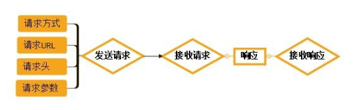

分享人：崔浩然
目录
1. 背景介绍
2. 知识剖析
3. 常见问题
4. 解决方案
5. 编码实战
6. 扩展思考
7. 参考文献
8. 更多讨论
当开发人员需要调试一个网页是否运行正常，并不是简简单单地调试网页的HTML、CSS、脚本等信息是否运行正常， 更加重要的是网页能够正确是处理各种HTTP请求，毕竟网页的HTTP请求是网站与用户之间进行交互的非常重要的一 种方式，在动态网站中，用户的大部分数据都需要通过HTTP请求来与服务器进行交互。Postman插件就充当着这种交互方式的“桥梁”
Postman安装
1、Postman最早是作用chrome浏览器插件存在的，所以，你可以到chrome商店搜索下载安装，因为重所周知的原因，所以，大家都会找别人共享的postman插件文件来安装。由于2018年初Chrome停止对Chrome应用程序的支持。
2、Postman提供了独立的安装包，不再依赖于Chrome浏览器了。同时支持MAC、Windows和Linux，推荐你使用这种方式安装。https://www.getpostman.com/apps
如何使用postman测试接口？
GET和POST的区别
GET 用于获取信息，是无副作用的，是幂等的， 且可缓存 POST 用于修改服务器上的数据，有副作用，非幂等，不可缓存
get是从服务器上获取数据，post是向服务器传送数据。
Get 方法通过 URL 请求来传递用户的数据，将表单内各字段名称与其内容， 以成对的字符串连接， 置于 action 属性所指程序的 url 后，数据都会直接显示在 url 上，就像用户点击一个链接一样； Post 方法通过 HTTP post 机制，将表单内各字段名称与其内容放置在 HTML 表头(header)内一起传 送给服务器端交由 action 属性能所指的程序处理， 该程序会通过标准输入(stdin)方式，将表单的数 据读出并加以处理；
Get 方式需要使用 Request，QueryString 来取得变量的值；而 Post 方式通过RequestForm 来访问提交的内容；
Get 方式传输的数据量非常小，一般限制在 2 KB 左右，但是执行效率却比 Post 方法好；而 Post 方式传递的数据量相对较大，它是等待服务器来读取数据，不过也有字节限制，这是为了避免对服务器 用大量数据进行恶意攻击。 建议：除非你肯定你提交的数据可以一次性提交，否则请尽量用 Post 方法 ；
Get 方式提交数据，会带来安全问题，比如一个登陆页面，通过 Get 方式提交数据时，用户名和密码将出现在 URL 上， 如果页面可以被缓存或者其他人可以访问客户这台机器，就可以从历史记录获得该用户的帐号和密码， 所以表单提交建议使用 Post 方法
get方式的安全性较Post方式要差些，包含机密信息的话，建议用Post数据提交方式； 在做数据查询时，建议用Get方式；而在做数据添加、修改或删除时，建议用Post方式。
PostMan的优点和缺点？
优点:门槛低,上手快
优点: 脚本语言是js
优点:自带各种代码模块
优点:跨平台
优点: 免费版就已经非常强大了,支持http,https协议
优点:有命令行版本,newman,方便放在服务器上运行,或者jenkins做持续集成
优点: 支持抓包,保存历史记录,多终端同步用例
优点: 支持读取数据文件,json,csv
优点:支持json Schema校验
优点: 如果项目有Swagger生成API文档,JSON文件可以直接导入Postman来生成用例
不支持:通过url搜索用例,通过命令行传参修改环境变量,不能指定执行失败的测试用例
不理想:不能操作文件相关的操作,不能读写数据库,不能使用非HTTP协议
不理想:封装公共函数,引入第三方,自己写的js库,用例间的跳转,重试等
参考一：Postman使用详解 - YunMan - 博客园